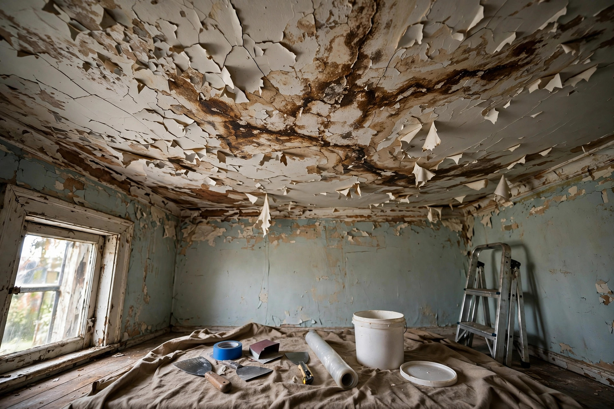

Ceiling Water Damage Repair
Brown rings, bubbling paint, sagging drywall — we find where the water came from, dry it out, and rebuild the ceiling properly.
Questions, answered plainly
My ceiling has a brown stain but feels dry. Is it okay?
A dry stain still means water traveled there once. The source may be fixed or may be waiting for the next rain. We trace the path to be sure before anyone paints over it.
The ceiling is sagging. Is that dangerous?
Saturated drywall gets heavy and can fail. Do not poke it or hang anything from it. We assess whether the section needs immediate removal.
Do you fix the roof or pipe too?
We handle the interior: drying, removal, and rebuild. For the source — roofing or plumbing — we coordinate with or refer trusted trades so the leak is actually stopped.
Will the texture match after repair?
We match common textures (orange peel, knockdown, smooth) as closely as possible. Perfect invisible blends depend on the existing finish and lighting.
How long does ceiling repair take?
Drying usually takes two to four days, then patching, texture, and paint add another couple of days. We keep you updated at each stage.

Common sources in Caldwell homes
Upstairs bathrooms
Wax rings, supply lines, and shower pans in second-floor baths drip onto the ceiling below — often for weeks before staining shows.
Aging roofs
Historic-district homes with older roofing let wind-driven rain in around flashing and valleys, showing up as ceiling stains rooms away.
Ice dams
Winter freeze-thaw cycles push meltwater under shingles at the eaves, wetting top-floor ceilings from above.
HVAC condensate
Attic air handlers with clogged drain lines overflow pans and soak the ceiling beneath.
Stain spreading on the ceiling?
We will trace the source, dry the cavity, and rebuild — in that order.
Open 24 hours · Serving Caldwell and Canyon County
How to read your ceiling stain
Stains tell a story if you know the language.
Yellow-brown rings
Classic water rings with darker edges. Usually an active or recent leak — the ring marks where water spread and dried.
Dark spots with texture
Raised or fuzzy dark areas suggest the drywall stayed wet long enough for surface growth. Needs more than paint.
Sagging or bubbling
The gypsum core is saturated and losing strength. This section needs removal, not drying — it will not recover its shape.
Do not just paint over it
Paint hides the stain but not the moisture. Trapped dampness grows mold inside the cavity where you cannot see it.
Repair sequence
Trace
Moisture meters and inspection find the entry point — roof, plumbing, or condensation.
Dry
Wet insulation comes out; cavities dry with directed airflow until meters read safe.
Rebuild
Damaged drywall is cut back to solid material, replaced, taped, and textured to match.
Finish
Primer and paint complete the repair so the ceiling reads as one surface again.
A dining-room ceiling develops a spreading yellow stain after a windy rainstorm. The source turns out to be lifted flashing on a 20-year-old roof two rooms over — water traveled along a truss before dripping. Roof repair first, then the ceiling.
Sources: EPA — Mold, Moisture & Your Home · CDC — Mold
What we check before quoting
- Moisture readings across the stain and beyond its visible edge
- Attic or floor-cavity inspection above the damage
- Whether the source is active, intermittent, or already resolved
- Insulation condition — wet batts must come out
- Texture and paint matching for an invisible repair
This assessment takes under an hour and gives you a fixed quote — no hourly meter running while you wonder what it will cost.